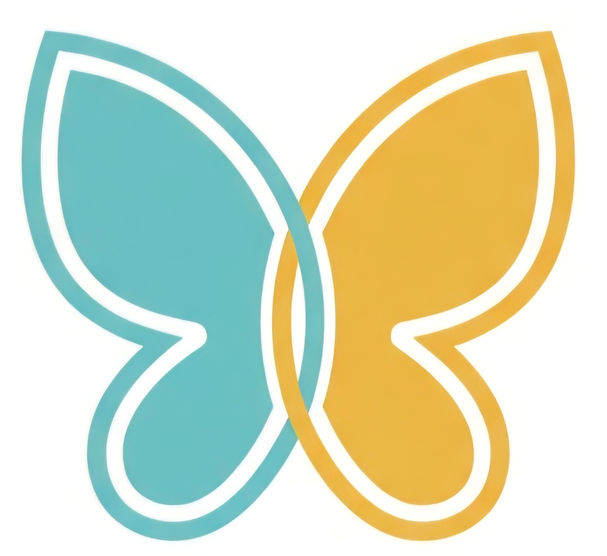
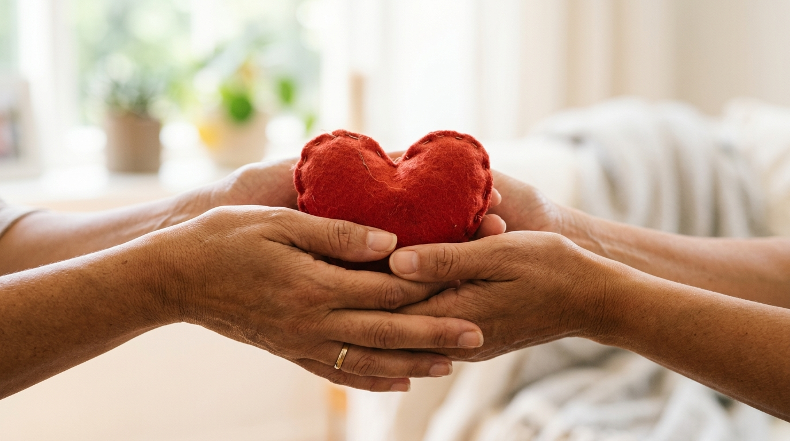

농협 301-0383-7865-51
(예금주 : 사)행복한공감부설 서울산성·가정상담소)
안녕하십니까.
사단법인 행복한공감을 찾아주시는 모든 분들께 진심으로 감사드립니다.
사단법인 행복한공감은 하나님사랑과 이웃사랑의 기독교 정신을 바탕으로, 지역사회 구성원 모두가 존중받고 회복되는 삶을 살아갈 수 있도록 돕는 것을 사명으로 하고 있습니다.
우리는 특히 어려움을 겪는 여성, 아동·청소년, 장애인 등 취약계층 이웃이 소외되지 않고 자신의 가능성을 발견하며 건강한 관계 속에서 성장할 수 있도록 다양한 상담·교육·복지 서비스를 제공하고자 합니다.
‘행복한공감’이라는 이름은 타인의 아픔과 기쁨을 함께 나누는 마음에서 출발합니다.
우리는 공감을 단순한 위로에 머무르게 하지 않고, 실질적인 도움과 회복의 길로 이어지도록 노력합니다.
하나님께서 주신 사랑을 실천하며 이웃의 필요에 응답하고, 누구나 존엄하게 살아갈 수 있는 따뜻한 공동체를 만드는 것이 저희의 소망입니다.
앞으로도 사단법인 행복한공감은 전문성과 신뢰를 바탕으로 지역사회와 함께하며, 희망이 필요한 이웃에게 위로와 용기, 사랑을 전하는 기관이 되겠습니다.
많은 관심과 동참 부탁드립니다. 감사합니다.
하나님께서 주신 사랑을 삶과 봉사로 실천함
모든 이웃의 존엄을 존중하고 필요에 응답함
이웃의 아픔과 기쁨을 함께 나누며 진심으로 돌봄
상담과 교육을 통해 개인과 가족의 회복과 성장을 지원함
지역사회와 협력하여 지속가능한 도움과 변화를 만듦
지역 청소년 선도 및 심리적 회복을 위한 경찰청 연계 선도 프로그램 기관 선정
성폭력 및 가정폭력 피해자 치유·상담 전문기관 신규 개소
투명하고 전문성 있는 복지 및 상담 서비스를 위한 조직 구성입니다.
주소: 울산광역시 울주군 범서읍 대리3길 19-3, 3층
울산 울주군 범서읍 구영리 인근 대리3길 19-3, 3층
대중교통 이용 시 울주군 범서읍 대리 정류장 인근 하차사단법인 행복한공감은 부설 서울산 성·가정상담소를 비롯한 상담·선도·교육·실습 사업을 운영합니다.

사)행복한공감 부설사단법인 행복한공감 부설 서울산 성·가정상담소는 [성폭력방지 및 피해자보호 등에 관한 법률 제10조]에 의거하여 폭력 피해자 및 가족의 인권을 보호하고 치유와 건강한 회복을 돕기 위해 설치된 전문 상담기관입니다.
울산지방경찰청 선도사업 「사랑의 교실」 운영기관으로 선정되어 위기 청소년의 재비행을 예방하고 자아존중감과 건강한 또래·가족 관계를 회복하도록 돕는 전문 선도 프로그램입니다.

경상남도교육청 지정 학교폭력 가해학생 특별교육 및 심리치료 전문기관으로서, 내면의 감정을 건강하게 다루고 근본적인 인식과 행동 변화를 이끌어냅니다.
한국사회복지사협회 인증 사회복지 현장실습기관으로, 실천 현장의 감각과 윤리의식을 갖춘 전문 사회복지사를 체계적으로 양성합니다.
작은 나눔과 따뜻한 참여가 한 사람의 회복과 건강한 지역사회를 만듭니다.
매월 정기적인 나눔으로 위기 가정과 피해자의 든든한 울타리가 되어주세요.
생일, 기념일 등 특별한 날에 뜻깊은 사랑과 희망을 전해주세요.
상담 대상자와 취약계층에게 필요한 생필품 및 교육 물품을 후원받습니다.
기부금 영수증 발급 및 후원 관련 문의는 대표전화(052-248-1366)로 연락주시면 친절히 안내해 드립니다.
지역사회에 사랑과 온기를 전해주실 자원봉사자님의 참여를 환영합니다.
한국사회복지사협회 선정 실습기관에서 실천 현장의 전문성을 키워보세요.
모든 상담 내용은 철저히 비밀이 보장되며, 부설 서울산 성·가정상담소 전문 상담원이 따뜻하게 동행합니다.
법인 행사, 상담소 소식, 예방교육 활동 사진과 자료들을 공식 네이버 블로그에서 생생하게 만나보세요.